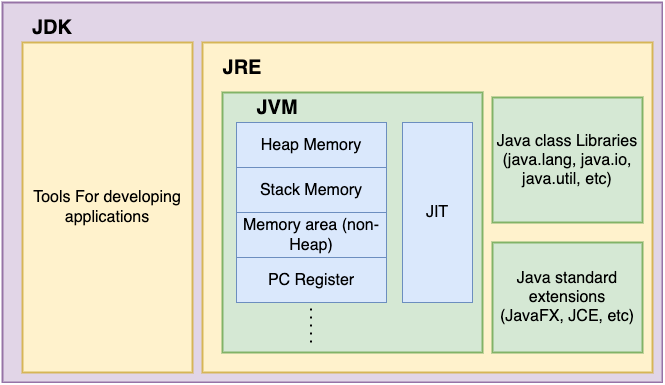

Core Java
# What is Java?
-
Java is a high level programming language, platform independent language
which supports OOPs concepts.
-
Java was developed by James Gosling in 1995 in sun Microsystem company.
-
It is
statically typed and case sensitive language.
-
It is a class based language where we need to write each and every
code inside a class.
# Levels of Programming Language:-
- * There are three levels of programming in computer word.
- Low level Language (LLL)
- Mid level Language (MLL)
- High level Language (HLL)
- 1. Low Level Language:
- Low level language is a machine code that can only understand by computer.
- It consists only 0 & 1.
- It works with computer hardware components.
- It generates output in the form of 0 & 1.
- 2. Mid Level Language:
- Mid level language is also called as assembly language.
- It includes some pre-defined words and symbols.
- In Java, We say that the byte code which is generated by compiler
that is known as assembly language.
- 3. High Level Language:
- High level language is a language which is understand by users.
- High level language is used to write set of instruction to perform
any task.
- It includes English characters such as Alphabet characters
(Uppercase (A-Z))(Lowercase (a-z)), numeric digit(0-9)
and some special symbols(@,#,%,&........).
- Compiler and interpreter are used to convert high level language
into low level language.
# Features of Java:-
- Object Oriented Programming(OOP)
- Platform Independent
- Simple Language
- Case Sensitive
- Secure
- Robust
# Java Syntax:-
-
public class First{
public static void main(String[] args){
}
# How Java program works and executed.

# Important software of Java:
* There are three important software of java :-
- 1. JDK:
- JDK stands for Java Development Kit.
- JDK provides all requirement tools and software for developing
a software application.
- It includes JRE and some development tools in order to develop
software application.
- It works as a compiler which is used to compile java programs.

- 2. JRE:
- JRE stands for Java Runtime Environment.
- JRE provides JVM and some java pre-defined libraries for run java
bytecode.
- It is a software which is used to run java byte code.
- First, It loads the class file and verify bytecode and interprete bytecode.

- 3. JDK:
- JDK stands for Java Development Kit.
- JDK has many components to read bytecode.
- JDK is used to read the bytecode and check logical errors in program
during propgram execution.
- It is the responsible for call main method after completion the process
of JVM Runtime Memory process.

Go to: Top